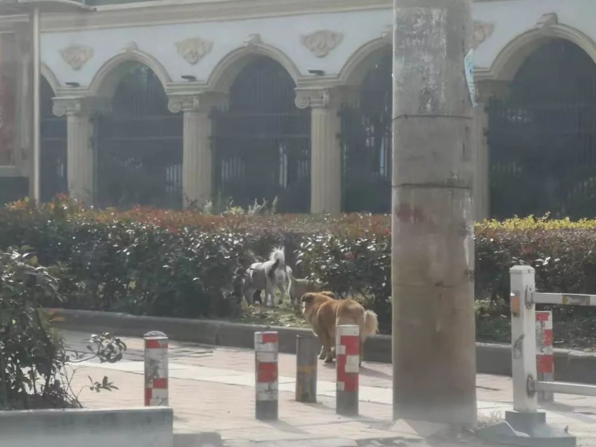
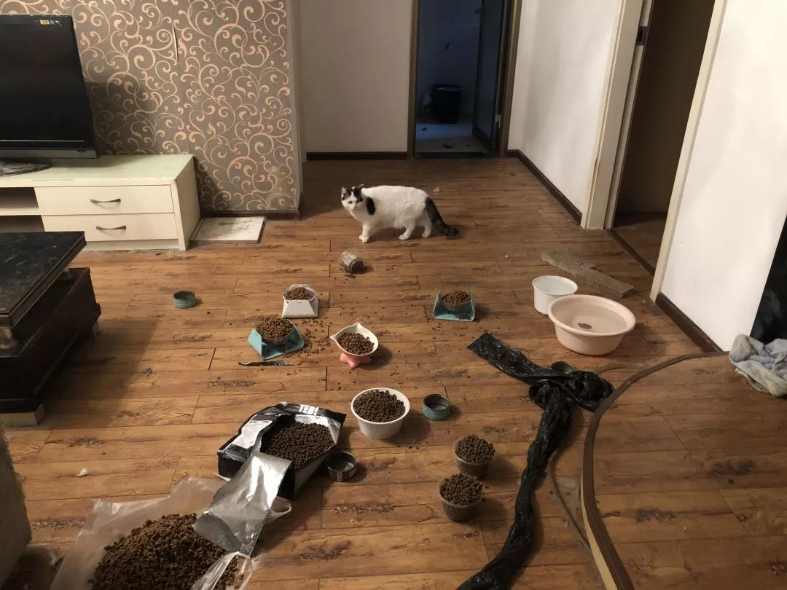

被困武汉城内的宠物们
原文链接 备份链接 武汉城里留守的宠物们，遭遇了一场猝不及防的粮食危机。它们的主人春节返乡前，只留下了足够春节假期吃喝的食水，而由于疫情和封城，宠物主人不能如期返回武汉，这些独居的宠物们，成了另一群等待救援的生命。这几天，真实故事计划和几 …
关注并星标消费新声
不错过泛消费任何最新动态

就像一张网，“封城”“封路”以及关于抗疫的种种举措，兜起了“人命关天”的大局，而微小个体的遗漏和掉落往往需要相同处境的人去打捞，他们的命运也互为参照。
作者 | 刘丹
编辑 | 罗立璇
设计 | 范晓雯
列车在武汉站停下，车门没有马上打开。芮伊整个人绷着，脑子里一片空白。大概过了30秒，门开了。芮伊跑下车，冲向出站口。空旷的候车广场里，有人喊，“我们终于回家了！在外面太难受了！”
这是武汉“封城”的第8天。芮伊从老家返回武汉，票面上的终点是另一个城市，按照疫情爆发前的行车路线，这班车将在武汉站短暂停靠。现在一切都是未知。芮伊紧张了一路。车门不开，她就会被载到一个陌生的城市；车门开了，就意味着她将在武汉度过没有亲人陪伴的抗疫期。
决定这一场“逆行”的原因是，家里的猫正在武汉等着芮伊回来。很多人在离开武汉之前，对已经悄然发生、即将大规模爆发的疫情毫不知晓。封城之后，宠物留守在武汉的家中，生命随着断水断粮进入倒计时，逼他们审视自己能为拯救这些弱小生命投入多少成本。
而他们本身也是被审视和衡量的对象。在疫情的恐慌下，与武汉这座城市的交集让他们成为被人群边缘化的异类。比起留在老家被隔离，芮伊宁愿陪在宠物身边，“生命是需要被平等对待的。”
就像一张网，“封城”“封路”以及关于抗疫的种种举措，兜起了“人命关天”的大局，而微小个体的遗漏和掉落往往需要相同处境的人去打捞，他们的命运也互为参照。

逆行
大年三十晚上，芮伊脑子里只有一个想法：我要回武汉。
几乎是寸步难行。1月23日凌晨两点左右，武汉正式宣布“封城”，暂时关闭全市离汉通道。当天上午10时，铁路部门关闭武汉地区所有铁路火车站进站通道。“封城”后，出逃武汉的故事屡屡见诸报端，而芮伊却越来越想回去。
离开武汉前，她把猫留在家里，请朋友帮忙照看，家里也配备了自动饮水机、喂食机，以及摄像头等装备。突如其来的疫情和封城让假期延长，打乱了她原本的安排。她又紧急联系了楼下宠物店上门喂猫。几天后，宠物店的人告诉她，猫咪变得烦躁，打翻了家里的东西，出现了明显的异常行为。
芮伊有预感，疫情不会在十天半个月内结束，而在这短短几天时间里政策已经变了又变，她实在不放心长时间把猫放着不管。“如果这期间猫生病了，而我不能及时回去，那我一定会后悔的。”
想回武汉照顾宠物的不止芮伊一人，她在一个养猫群里发现了有相同想法的猫友们，大家一商量，做了两个方案：如果途径武汉的各班高铁仍会在武汉站停车，那么他们可以在停车间隙冲下车去；要么，几个人先去往周边城市，然后搭伙包车回到武汉。
芮伊还算幸运，她买到途径武汉的高铁，顺利下车，和几个同在武汉站的猫友一起包车回家。而有的群友直接是从武汉周边的黄陂、鄂州等地骑行几十公里回到市区，为了猫。
猫不是这种“逆行”的唯一动力。芮伊老家以“硬核”的疫情防范工作著称，她所在的小区里也张贴了各种宣传告示。一回到家，芮伊就自行隔离，家里来人她就躲进屋子里，不想别人知道自己是从武汉回来的，“朋友们知道我回来了之后都不怎么敢和我讲话，还有人开玩笑说要举报我。”
这种“特殊待遇”让芮伊觉得不公平，她宁愿回武汉和猫待在一起，“你对人善良，人不一定对你善良。但你对自己的猫好，它真的也会对你好。你养猫的时候可能不会想要它回报你什么，但猫有时候会带给你一些惊喜。回家看到它们，至少会有个心理安慰。”

▲留守武汉的猫
因为打上“武汉”这一标签而在外地遭受的差别对待，留在武汉的人感同身受。
宠物店老板周默原本计划1月22日带着他养的秋田犬去云南玩，狗的寿命不过十几年，周默想让小狗多看看风景。那时候武汉还没有封城，但钟南山已经明确表示了新型冠状病毒肺炎存在人传人现象。他担心会给别人添麻烦，于是取消了旅行计划。“出门都不敢咳嗽，一咳嗽别人就会害怕。”
周默家里经济条件不差，开宠物店不是为了赚大钱，而是为了方便照顾他养的十几只猫猫狗狗。开店三年，周默看着一些宠物长大，也看着一些客人成家，宠物变成了人和人之间的连接，“我对人和对宠物都有很长时间的感情在这，所以店还是要开下去。”
公交停运、私家车禁行，出行不仅麻烦，还有感染风险。周默每天骑着摩托车上门送货，最远的一次来回各40公里。疫情面前，狗还有没有粮吃、猫还用不用得上猫砂，对于周默来说仍然重要。“不养宠物的人不太会理解我们的心情。”
并不是所有人都理解这种价值排序，在疫情的恐慌下，部分弱势群体是可忽略甚至可牺牲的。根据网友爆出的消息，有宠物在主人被隔离期间被带走深埋，还有宠物疑似被主人从楼上抛下。网络图片显示，黑龙江讷河市等地为防控疫情，曾决定对流浪猫狗进行捕杀。
“歧视”是周默反复提及的一个词，要么是表达他对动物的担忧：“本来很多人就歧视动物，这次疫情还和野生动物有关，不明真相的人可能听风就是雨。”
要么是说如今外地人对武汉人的态度，“我一天到晚都能看到武汉人在外地被歧视的新闻，你们不能这样子好吧？我们其实做了很大的牺牲。”

互助
1月25日，大年初一。周默的宠物店里死了两只小猫和一只狗。
这天上午，武汉市新型肺炎防控指挥部发布了第9号通告，宣布26日0时起，除经许可的车辆外，对中心城区区域实行机动车禁行管理。“封路”不止阻断交通，也切断了很多生命与外界的联系。“别说是猫狗了，要是有老人自己住，没人去送饭也可能饿死。”
要抢时间，周默慌了。人手本来就不够，两家店只有他和一位员工照看，每家店处理铲屎、喂食、遛狗等日常工作就要花上四五个小时。“封路”打乱了工作安排，他想着二店寄养的宠物少，让员工先照看一店，自己赶紧出去送货。
一出门就耗到了夜里。晚上回来的时候，他还想去囤点青菜，去了之后发现超市只剩肉了。周默跑了一天，累得不想说话，也没顾得上去店里看看，结果那三只小动物就不行了。“是我们的责任，但我们也确确实实迫于无奈，哪想到突然就这样了。”
“封路”让留守宠物救助变得更为急迫。也是在25日，武汉小动物协会微信后台的求助留言越来越多，负责人杜帆觉得，现在不能再犹豫了，“紧要关头我们必须得要撑起这个责任。”
“为什么要到处去传播病毒？”“人都管不了，还管猫干什么？”武汉小动物保护协会是武汉唯一在市民政局备案、拥有“合法身份”的民间救助组织。他们平日里的流浪动物救助工作就时常遭遇误解。质疑的声音在遇到疫情后变得更加尖锐。

▲武汉街头的流浪狗
对协会成员勋哥来说，救猫是大事。1月31日这天，杜帆和勋哥等人救下了一只黑猫，勋哥通过这件事感受到了“有史以来最难受又最兴奋的心情”。
猫确实是难救，救下之后勋哥特别有成就感。它被困在15楼的阳台上，身子卡在窗和窗栏的间隙，随时可能因为体力不支坠楼。流浪猫无法通过楼下的门禁，结合那几天盛传的“宠物也会感染新型肺炎”，勋哥立马就明白了：这是一只被扔出门的家猫。
为了救猫，杜帆去到楼顶，脚踩着围栏边缘，上半身探出栏杆外，抛下绳子套住猫，勋哥站在楼道里，用晾衣杆撑着猫接应。
但其实只要15楼的住户愿意拉开窗子，猫就可以跳进房间。屋主不愿意，说家里还有两个孩子。猫获救，窗子开了，屋主拿着一瓶消毒水不停地喷着窗台。“作为一个想保护孩子的母亲，她只是选择性地相信了自己认为是正确的东西”，勋哥试图去理解屋主的行为，但还是觉得委屈，“他们家门上还挂着一个五好家庭的牌子，为什么遇到事情直接拒绝沟通呢？”
关于猫狗等动物的生命价值有很多评价标准，比如是否构成威胁、家养还是流浪，比如品种、血统、价格。有的狗用来比赛，有的狗可以吃掉。即使是由爱或者善意驱动的行为，也时常与某些价值排序并行，并在疫情中变得更加突出。
也有不少人为了让自己的宠物优先获得救助而瞒报信息。杜帆心里不太舒服，“希望大家都能够如实说吧，给更多宠物一个平等的救助机会”。还有对他人的漠视，“明明人在武汉，离放猫的房子就两站路，他怕被感染，说家有老人小孩，自己不去让我们去，我不知道他心里是怎么想的。”
其实救助不止是关于某个人某件事。“如果不去救这些猫狗的话，它们可能真的会死在家里，而且会造成二次的疾病传播。”杜帆通常用这个理由说服小区物业放他们通行，这些小区严加防控，往往是因为已经存在确诊病例。
但救助又确实可以只是个体之间的相互关心。范丽娜1月19日从武汉回老家的时候把猫也带回去了，自己的猫安置好后，她开始操心起别人的猫，帮着微信群友们收集救助信息。“我想我的猫好，我也想所有的猫好。”
25日晚上8点，距离“封路”还有4小时，范丽娜收到群友求助，说自己人在青山区，想把猫从光谷区接回身边。这时已经很难找到车了。范丽娜想起有位邻居最近在做志愿者接送医护人员出行，于是联系他帮忙。等这位司机师傅去接猫，已经是晚上10点40分。到了小区楼下，保安把师傅拦在门外。范丽娜和朋友轮番打电话求情，总算把猫接了出来。
标准由人建立，以人的意志为转移。宠物医院的老板张寻发现，武汉街头多了很多流浪狗，有不少品种狗也被抛弃了。“很多人还是把宠物当作好玩的东西，觉得狗的命不重要。”
张寻的医院去年才开业，目前还没盈利，估计要两年才能回本。1月29日发布的《武汉市新型冠状病毒感染的肺炎疫情防控暂行办法》要求宠物商店(医院)暂停营业。张寻的店不对外营业，但还是会有员工留守，希望遇到需要急救的动物还能救一下。有些不需要复杂仪器的基本治疗，张寻就开着车上门，“很多人电话打过来，能跑的我们一定跑。”
开宠物店之前，张寻利用业余时间做过五六年的流浪动物救助工作。那时候更多是去菜市场和狗贩子较劲，稍不及时，就会有狗被当场宰杀。扯皮、打架，被逼急了还有人亮刀子。张寻也知道他们的救助行为其实处在模糊地带，但国内又没有相关的小动物保护法。
“矛盾爆发出来，就只能靠自发的力量，自己想办法去解决。”

透支
在可以预见的持久抗疫和不可预见的政策变化中，钱是眼下为数不多的能够被计算的问题。
对于在武汉养宠物的人来说，原本过年期间寄养一周，花费不过500元左右，随着假期延长，寄养变成了无底洞。找人上门喂养，每次的费用大多也要100元以上，这还不算开锁费和车费。
范丽娜这几天都活跃在救助群中，看到猫友群里有个女孩说家里的猫只剩5天口粮，她就帮着联系开锁匠和喂猫人。
“封城”之后，武汉市上门开锁的价格涨到了300-800元。听到开锁师傅的报价后，这个女孩没再回复范丽娜的消息。又过了几天，范丽娜突然发现，这个女孩还在群里犹豫，说猫已经断水了，但她想等到断粮后再找人开锁。范丽娜气得删掉了这个女孩，“她都不着急，我急什么？”
宠物店也陷进了望不到尽头的消耗中。已经有两三个人不回张寻的消息了，原定的寄养服务已经到期，他们还没把钱结清。“如果只是过年回家寄养一个星期，费用也就五六百，现在你不知道会寄养多久，个把月下来可能得三四千。”
有能力提供上门服务的宠物店不多了。周默估计，武汉1/3的宠物店都撑不过今年。他店每天房租和工资等支出就得7000块钱，账上的资金维持不到两个月。商场的私人租户们拉了个群，想找找获得补贴或者租金减免的办法，周默心里清楚，希望不大。
类似的事在周默的经验里早有答案。比如现在，没有口罩就要出门去买，但相关部门又规定了出门必须戴口罩。还有去年要求办狗证，大型犬没证要罚，罚了之后又不给办证。周默想来想去，只剩一句感慨，“要是领导也喜欢狗就好了。”
留守宠物的生存将更加危急，但能全力投入救助的人可能越来越少。伊万是民间救助组织“武汉土猫”的创建者之一。根据伊万的介绍，通过群友互助等方式，她们已经解决了400多个求助，但力量仍然太小。前两天，包括伊万在内，群里陆续有人接到了在家办公的通知。
杜帆原以为真正需要上门救助的应该只有50家左右。但仅在26日武汉小动物保护协会公众号的文章发出当天，后台就立刻收到300多条求助信息，现在协会已经完成帮扶400家，被登记在册待解决的还有500多家。
目前他们有两个工作人员负责整理求助信息、处理后台数据，同时还有6个志愿者，两人一组，分别上门进行汉口、武昌，汉阳三地留守动物的救助。人手不够，他们又建立了互助群，让求助人自己在群里对接相关资源。“力不从心”，杜帆说道。
而且，在“救命”的紧迫感之下，不同的人对怎么救、什么是“救”，有不同的理解。
疫情爆发后，老猫是对救助需求反应最迅速的民间救助人之一。1月25日，老猫的推送《这是一条紧急推送 | 留守武汉的猫咪，你们的食物和水还够吗？——我们提供上门接猫服务，请快点联系我们，不然就来不及了》在短时间内阅读量突破10万。
有个女孩看到这篇文章后，付了寄养费和路费，让老猫把自己留在武汉家中的猫接回寄养。随后她发现网上传出老猫会在救助后转手卖猫的消息，于是联系老猫，希望他每天发一下猫的视频或者照片，结果老猫非常愤怒地打来电话，认为她没有尊重自己所冒的风险，“既然你觉得我可能会把你的猫卖钱，那咱们就谈钱。300块钱路费不够，现在武汉市封路，随便出门干个什么都是500块钱起步。”
事后老猫坦承，那天他救助太累了，心力交瘁，所以没能保持足够的理智。但信任由此断裂，女孩要求老猫将猫送回，而老猫忙于救助，要求对方自己将猫接走，两人互不让步，“封城”“封路”让事情进一步陷入僵局。

▲救助人上门为猫准备的水和粮
老猫在武汉“猫圈”是个争议性人物，被指责“挑着品种猫救”、“打着救猫的旗号卖猫”，还有寄养条件差让猫被染上猫瘟等。但老猫认为自己采取的是商业化模式，通过救助赚钱来维持长期的救助，“让挨饿的猫少一点”。这段时间，老猫说自己一个人就已经解决了近200条求助信息，上门喂养每次收费200元，寄养50元一天，同时根据情况收取油费和开锁费用。
他有更高的效率，但也在透支个人能力，以更大的损耗为代价去救“命”。至少在成为被牺牲的“小部分”后，衡量其中的得失就不再是简单的加减法。
郑真曾是老猫的支持者，却在几天内对老猫的态度迅速变为厌恶。她的朋友在年前捡到一只流浪猫，并送到老猫手里寄养。这让郑真对老猫印象很好，在救助群内几乎一边倒地骂老猫的情况下，坚持替老猫说话。群友质疑老猫为什么不辟谣关于他的“黑料”，郑真反问，“是澄清重要还是救猫重要？”
朋友过年回老家后一直自行隔离，情绪低落，顾不上跟进小猫的情况。再和老猫联系的时候，朋友被告知，猫在被送过去的第二天就死了，老猫说这些天忙于救助，没及时通知她。“如果我可以早点知道他的事情，如果我们能多警惕一些，如果我们早一点问他的情况，可能猫还好好的，失去生命的教训我不会忘记，再次抱歉。”郑真在求助群里留下一长串道歉的话，退出了群聊。
救助是对弱小生命的善意，但这些善意正在经受更多拷问。尽管拷问可能本不需要存在。
更多的宠物被抛弃，更多的流浪动物陷入危险，但张寻手头上的救助工作却少了。从前积极的救助人士大多被疫情拦在家里，张寻明白，现在自保是第一位的，不能搞道德绑架。就像他自己，能力范围也不过是以他的宠物医院为圆心打转，半径又因为车辆限行、小区严控不断缩小。“环境的改变是需要时间的，需要全社会去参与，靠一两个人根本不够。”
话虽如此，张寻还是不想让自己闲下来，又报名了所属片区的抗疫志愿者，“能做多少做多少吧，哪怕去搬一块砖。”
最让张寻放心不下的还是那些流浪动物。留守的宠物尚且有人关注，在更偏僻的角落，更多的流浪动物还在寂静中，无人知晓。
（图片由受访者提供，除杜帆、范丽娜外，其他人名为化名）
end
**©消费新声原创内容 转载请联系授权
**
【爆料或寻求报道】加微信号：Suburb001
【商务合作】加微信号：sansheng_kefu


原文链接 备份链接 武汉城里留守的宠物们，遭遇了一场猝不及防的粮食危机。它们的主人春节返乡前，只留下了足够春节假期吃喝的食水，而由于疫情和封城，宠物主人不能如期返回武汉，这些独居的宠物们，成了另一群等待救援的生命。这几天，真实故事计划和几 …
原文链接 备份链接 今日立春 疫情形势严峻 不盲目歌颂 不滥抒情 要说真话 要做实事 我们致敬那些在前线与病毒抗争的英雄。作为摄影师，我们尤其致敬在前线用镜头记录这个事件的记者和摄影师们。但我们知道，这毕竟是一场特殊的战斗，并不是每个人 …
原文链接 备份链接 非常时期，武汉成了全国人民挂念、祈福的城市。封城后，武汉人民的真实生活是什么样？ 正和岛自1月26日起特别推出《叶青：我在武汉疫区的第N天》专栏。叶青是一位定居武汉40年的市民，也是一名学者和官员。接下来的一段时间，他 …
原文链接 备份链接 “招呼好乐乐、可可。”登机后，晓阳立即给男友林峰发了微信，不放心他们一起养的两只宠物，其实是更不放心男友。 “你才要照顾好自己。” “要登机了吗？” “那俩小的你不用担心。” “一落地记得给我打个电话。” 男友光速回 …
原文链接 备份链接 今天是武汉封城第13天，在城内留守的900万市民，除了为核酸检测、为床位奔波的人们，还有大多数人留在家中，除了采购生活物品和倒垃圾，连家门都不出。他们怎么度过封城的日子？本文作者的经历或许能代表一些普通武汉家庭的日常。 …